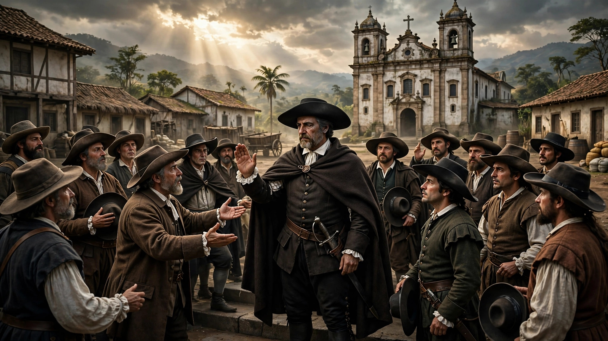
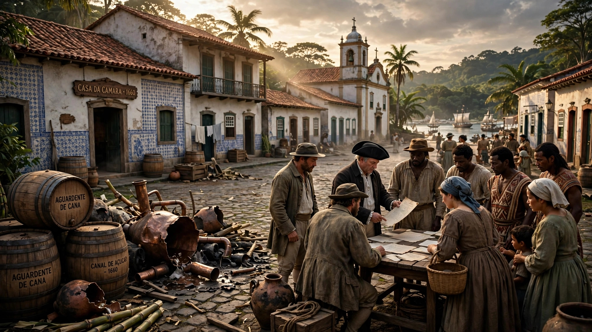
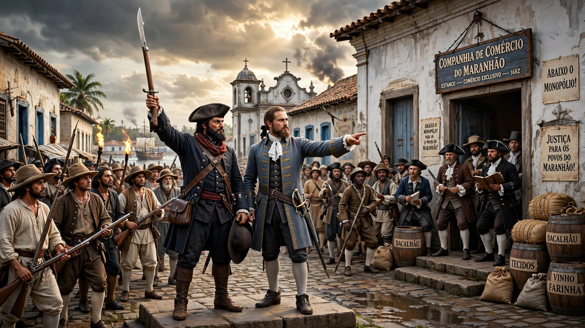
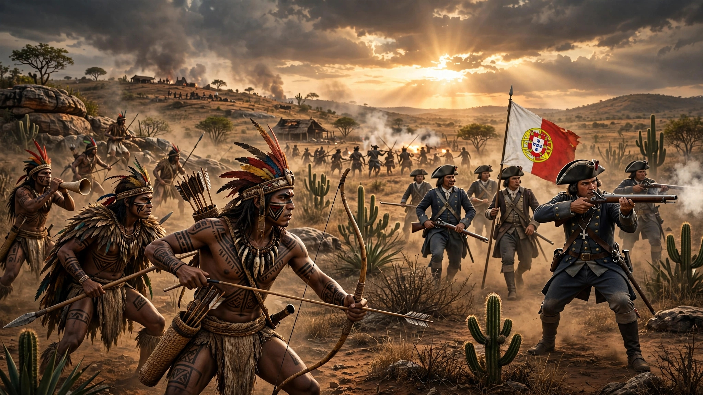
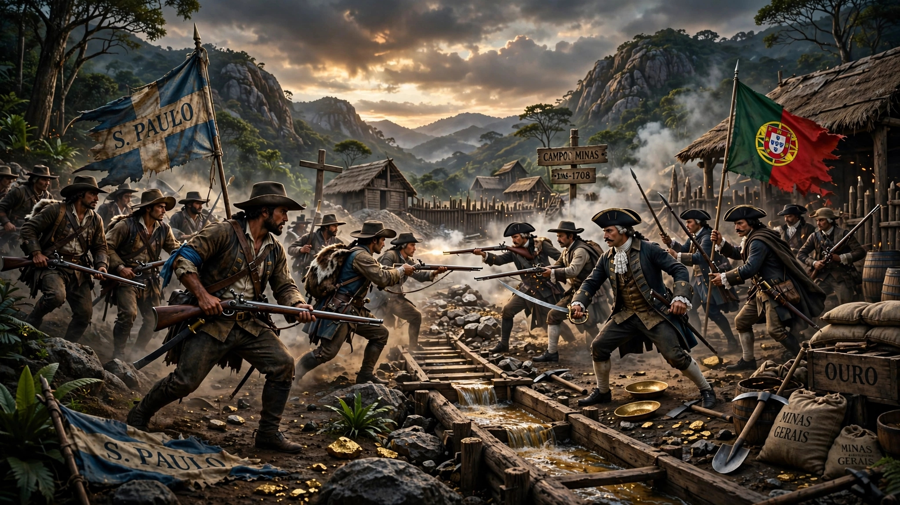
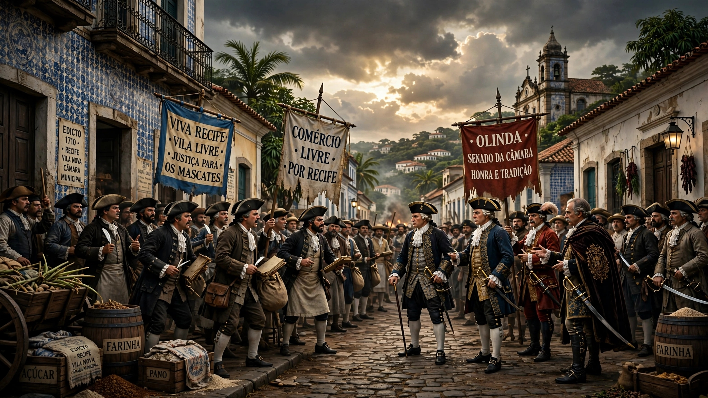
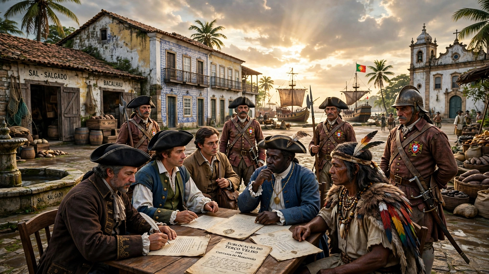
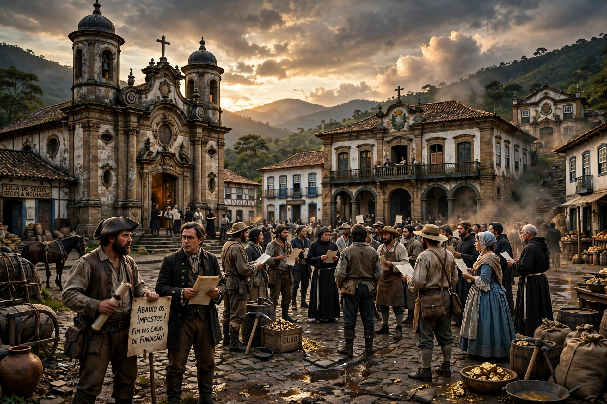

Revolta de Amador Bueno
Após o fim da União Ibérica, colonos aclamam Amador Bueno como rei de São Paulo. Primeiro grito nativista do Brasil.
Nativista
Revolta da Cachaça
Protesto popular contra o monopólio e aumento de impostos sobre a aguardente. Povo destruiu engenhos e destilarias.
Nativista
Revolta de Beckman
Contra o monopólio da Companhia de Comércio e a falta de escravos. Liderada por Manuel Beckman, tomou o poder por 2 meses.
Nativista
Guerra dos Bárbaros
Resistência indígena contra a expansão das fazendas de gado e colonos portugueses no interior nordestino.
Nativista
Guerra dos Emboabas
Conflito entre paulistas bandeirantes e forasteiros "emboabas" pelo controle das minas de ouro.
Nativista
Guerra dos Mascates
Recife comerciantes vs Olinda senhores de engenho. Disputa por autonomia política e econômica.
Nativista
Sublevação do Terço Velho
Motim militar por atraso de soldos. Tropas tomaram Salvador e exigiram pagamento da Coroa.
Nativista
Revolta de Vila Rica
Liderada por Filipe dos Santos contra as Casas de Fundição e a opressão fiscal de Portugal.
Nativista
Inconfidência Mineira
Conspiração de elite contra a derrama. Ideais iluministas. Tiradentes virou mártir da liberdade.
Emancipacionista
Conjuração Baiana
Revolta popular e abolicionista. Alfaiates, soldados e negros queriam república e fim da escravidão.
Emancipacionista
Conspiração dos Suassunas
Reuniões secretas com ideais republicanos. Descoberta antes de virar revolta armada.
Emancipacionista
Revolução Pernambucana
Única revolta colonial que tomou o poder. Instaurou república por 75 dias. Influência dos EUA e França.
Emancipacionista
Revolução Liberal do Porto
Exigiu retorno de D. João VI e Constituição. Acelerou o processo de independência do Brasil em 1822.
Emancipacionista